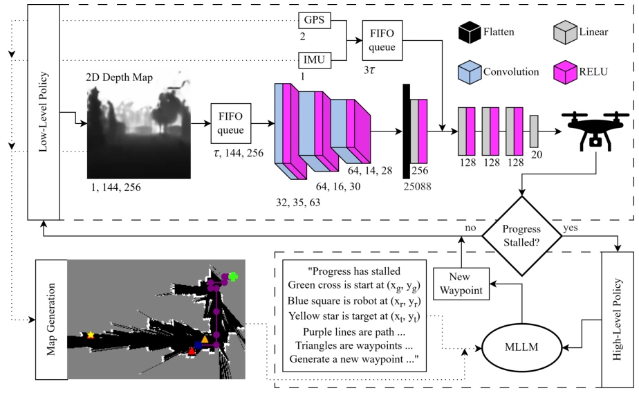

WayFinder is a typical architecture that "idles normally and saves the scene when emergencies arise". It places the computationally expensive MLLM in the cloud, relying entirely on the underlying DRL to operate blindly during normal times, only calling the MLLM for help when stuck in a dead end. This approach indeed saves the trouble of fine-tuning and avoids the compute pitfall of real-time inference, but splitting the navigation problem into a patchwork of "low-level blind bumping + high-level calling for help" essentially treats the symptoms rather than the root cause. The 27% improvement in the simulation environment looks quite appealing, but once deployed on real hardware, will the latency of converting depth maps to occupancy grids and MLLM hallucinations cause the drone to take off on the spot? After all, for an IROS 2026 paper, the gap between simulation and reality has not yet been bridged in this era. Although this layered design is clever, it overly relies on the accuracy of the trigger mechanism; if triggered too frequently, the compute cost could be higher, and robustness in extreme out-of-distribution scenarios cannot be guaranteed.
Existing VLA models, although having strong generalization, are difficult to deploy. Either the compute cannot handle it, preventing operation on edge devices [2], or they require fine-tuning for specific robots, where data is scarce and expensive [4], [8]. DRL is fast, but gets stumped when encountering out-of-distribution scenarios (such as dead ends), lacking common sense reasoning [5]. LM-Nav and others attempt decoupling, but often rely on global observations or API interfaces, lacking closed-loop recovery mechanisms [10]. WayFinder aims to solve: it needs both the zero-shot reasoning capability of MLLM and the real-time control of DRL, while avoiding the fine-tuning pitfall. Existing methods are either too slow or too dumb; WayFinder attempts to find a balance between the two, but the cost is introducing complex trigger logic and requiring extremely high precision for state mapping.
The overall architecture is an asynchronous layered architecture. The low level uses DQN for high-frequency motion control, inputting depth maps, GPS, IMU, and outputting discrete actions [6]. The high level uses Gemma 3 for zero-shot planning, triggered only when "stagnation" (no improvement in forward distance) is detected. The key innovation lies in state mapping: converting local depth to a global occupancy grid via Ray Tracing (black/white/gray representing free/obstacle/unknown), then feeding it to the MLLM combined with text Prompts with coordinates. The MLLM outputs new waypoints, and the low level takes over. This design allows the MLLM to only handle low-frequency strategic decisions, while the low level is responsible for high-frequency safety obstacle avoidance. Additionally, curriculum learning and replay buffers were used during the training phase to ensure the convergence of the DRL policy. State caching technology reduced training time, while offline A* path generation was used to evaluate environmental difficulty.

Fig. 1. WayFinder: closed-loop autonomy that adjusts kinematic control in response to sensors, querying an MLLM for waypoint generation when stalled.
Tested on 4 maps in AirSim (Blocks to Coastline). The baseline is pure low-level DRL. Results: After introducing MLLM, success rate improved by 1.82%-27.45%, and the larger the model, the better the effect. Ablation experiments show that removing coordinate prompts leads to a drastic performance drop, indicating that vision + language alignment is important. Interestingly, the local map using ray tracing performed better than the ground truth map, possibly because it forces the MLLM to focus on the local perspective. Three models of 4B, 12B, 27B were tested, proving that large models have more advantages in complex environment recovery, but also consume more resources. Experiments also show that partial observation maps have little difference in recovery rate compared to full observation maps, verifying the robustness of the framework.